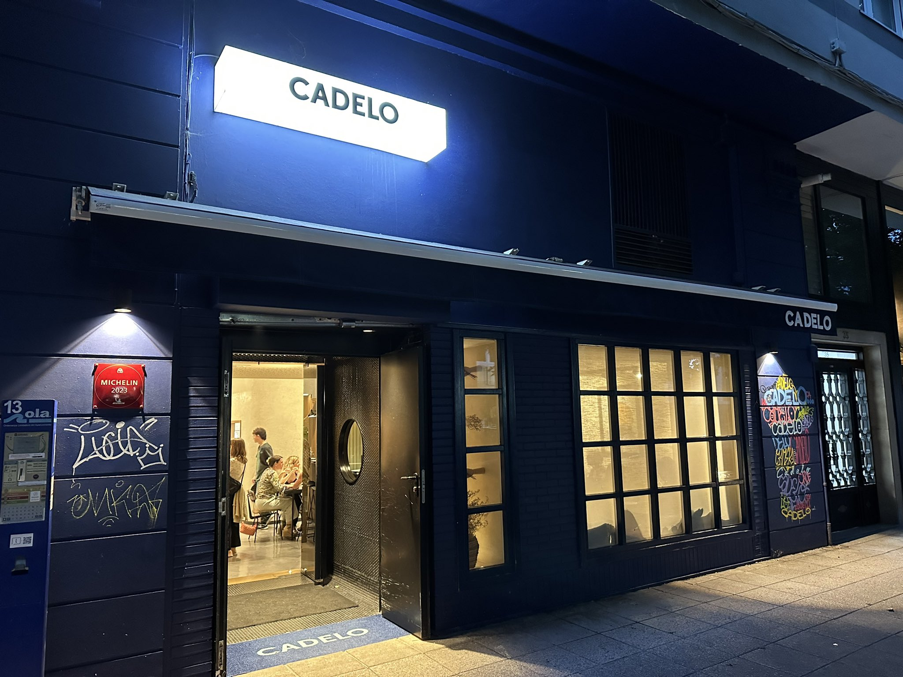
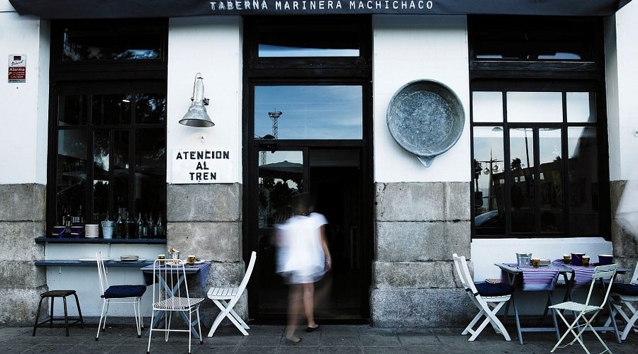
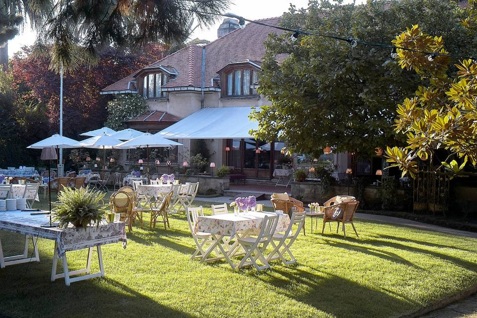
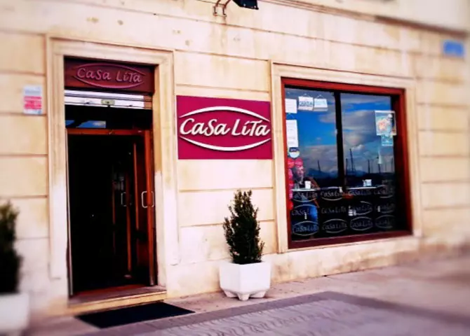

| Name |
Description |
Location |
Photo |
| Cadelo |
With a focus on traditional Cantabrian cuisine. A restaurant with an attractive façade and contemporary-informal aesthetics, on two floors, whose name pays homage to a local poet, well known in the city for selling his verses and stanzas for five pesetas. They offer a modern fusion menu, not very extensive but improved with word-of-mouth recommendations and designed for sharing, which is based on national produce to work it, to the taste of the day, with techniques and elaborations from other parts of the world. |
|
 |
| El machi |
This restaurant stands out for its meat dishes. We are El Machi, the oldest seafood tavern in Santander. Here vermouth was served and train tickets were sold since the 19th century. Tradition. Endless Santander snacks. Rabas and Vermouth. Mussels with sauce and bread. Wines with friends. Get-togethers of memories. Olives and potatoes. Breaded tigers. Prawns with mackintosh. Crusted rice dishes. Efficient waiters eager to please. Early risers who cook non-stop. Low ceilings. Tables that bring you closer and relaxing chairs. 120 years of history. This and much more at El Machi. |
|
 |
| Deluz |
It offers a unique dining experience with a fusion of traditional and modern flavours. A 15th century estate, located in the village of Markina-Xemein, just half an hour from Bilbao. It has 36 hectares of nature, lush forest and history that will make you feel the spirit of the Middle Ages. The Caserío Bauskain is a unique place to celebrate your event or wedding in Vizcaya with Deluz catering. An old renovated cowshed is the space where civil ceremonies, open-air events and cocktail parties are held, with a capacity for 800 guests. After the long cocktail in La Vaquería, the celebration continues in the hall, with capacity for 400 guests. |
|
 |
| Casa Lita |
A great place to have a drink. They have their own brand of gin and apart from being cheap, it's in one of Santander's trendiest areas. |
|
 |